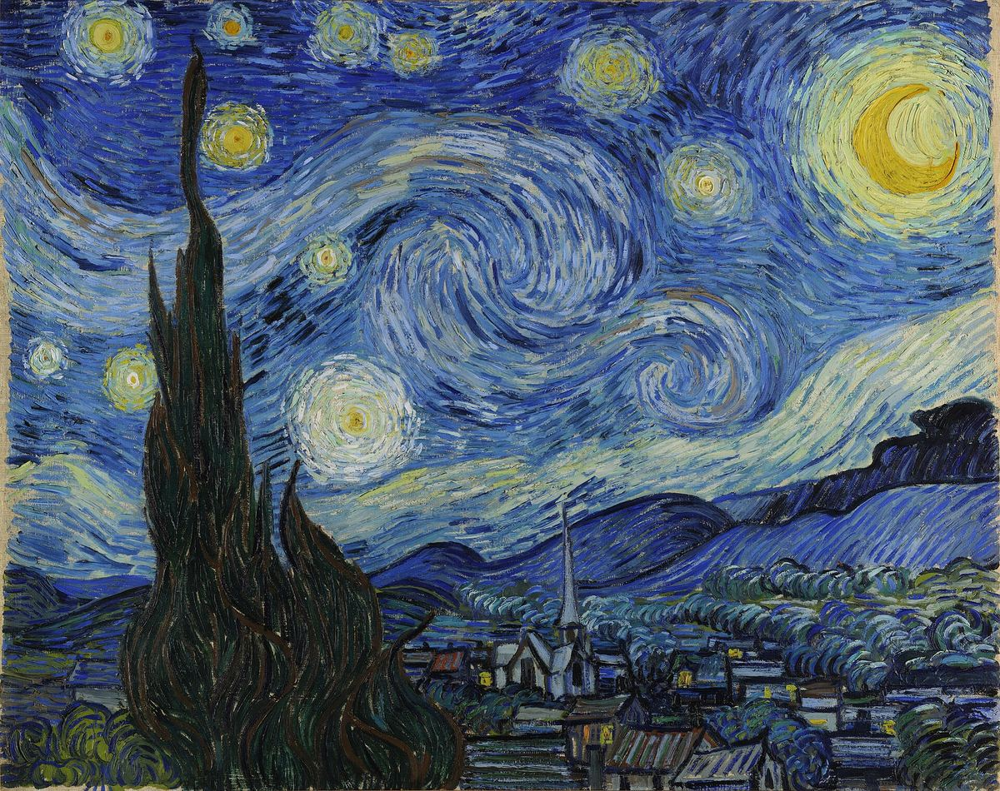

The Starry Night

Palette
- Gunmetal · your word: Gunmetal
- Denim · your word: Denim
- Slate · your word: Slate
- Dark slate blue · your word: Cobalt
- Sage · your word: Sage
- Khaki · your word: Khaki
Painted at the asylum in Saint-Rémy in June 1889. Its published pigment map comes from imaging, not paint samples: a 2008 study that modelled its reflected light points to ultramarine in the sky around the stars and cobalt blue in the swirls. In this photo the moon and stars average out to a dull khaki: thin yellow strokes mixed with the blue around them. The year before, Van Gogh wrote to his sister that the night is even more richly colored than the day.
Image
Wikimedia Commons · Public domain

Hex values are screen approximations. Every page lists its sources.